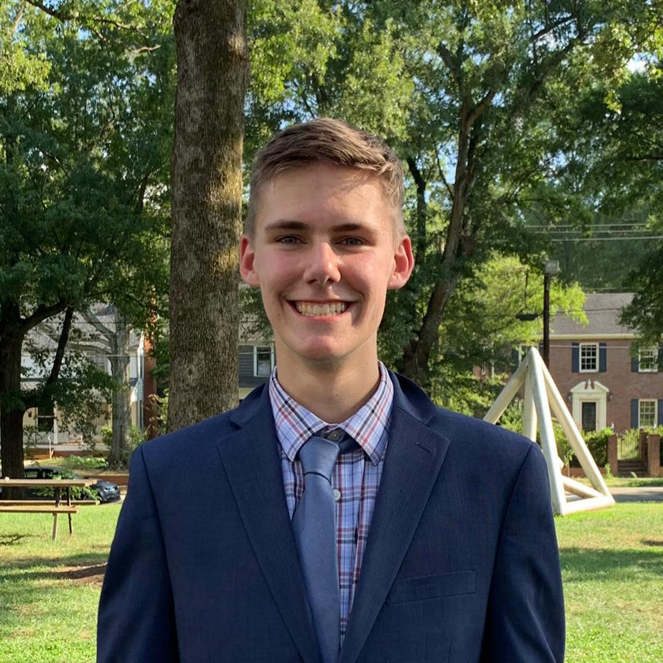

Sam Hiner
Sam is the Founder and President of NC for Better Government. In this role, he works with state legislators to build support for our mission and develop policy, codes the website, and recruits and manages volunteers.
Sam is a senior at the North Carolina School of Science and Math in Durham, NC. There, he serves his fellow students as the President of the Student Senate. Sam is also a Co-President of his school’s All Politics is Local Club, which conducts outreach between his school and the state legislature.
In his free time, Sam volunteers for the Durham Teen Court as a student attorney and hosts blood drives as a part of the Red Cross Leaders Save Lives program. Sam spent the summer a Political Affairs Intern with
The Borgen Project, where he lobbies his Congressional Leaders to support life-saving programs to improve conditions for those suffering from extreme poverty.
Sam is passionate about using his time to do as much good as possible. He believes that he can have the most impact by helping end extreme poverty, which he pursues through the Borgen Project, and by pushing for good-government reforms, which is why he started NC for Better Government.